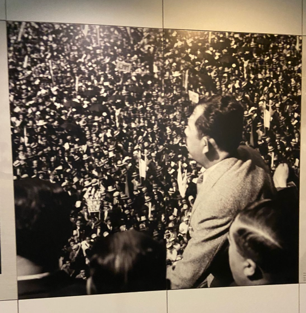
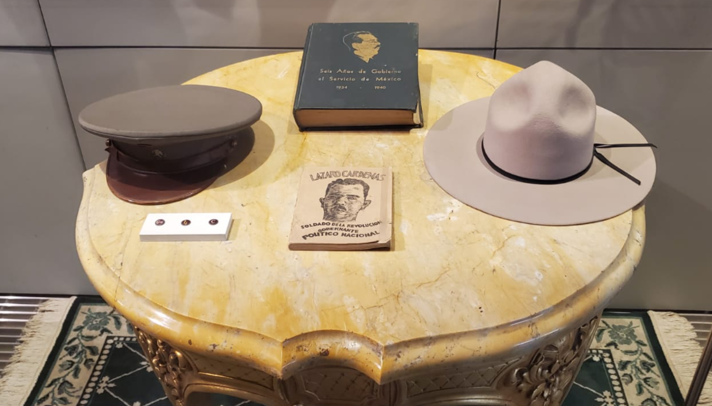
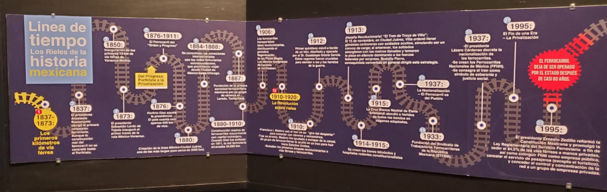

Sala 8 - El cardenismo (1934-1940)
El cardenismo
1934 - 1940
La presidencia de Lázaro Cárdenas (1934-1940) marcó el cumplimiento definitivo de las promesas de la Revolución. En esta sala final, se analiza cómo el Estado mexicano logró su madurez política al poner los recursos de la nación y la tenencia de la tierra al servicio del pueblo, cerrando así un ciclo de lucha para dar paso a un México moderno y soberano.
La expropiación petrolera de 1938 no fue solo un acto económico, sino el mayor símbolo de dignidad nacional del siglo XX. Este bloque detalla el momento en que México recuperó el control de sus recursos energéticos, fortaleciendo la economía interna y unificando a todos los sectores de la sociedad en una causa común de resistencia y orgullo nacional.
Bajo el lema de 'educar para transformar', el cardenismo llevó el saber a las fábricas y el arado a los campos. Descubre cómo la creación de escuelas técnicas y el reparto de millones de hectáreas devolvieron la esperanza a una generación, transformando el sacrificio de los revolucionarios en un futuro lleno de oportunidades para sus hijos.

Lázaro Cárdenas

Expropiación petrolera

Reforma agraria